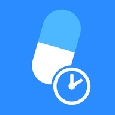
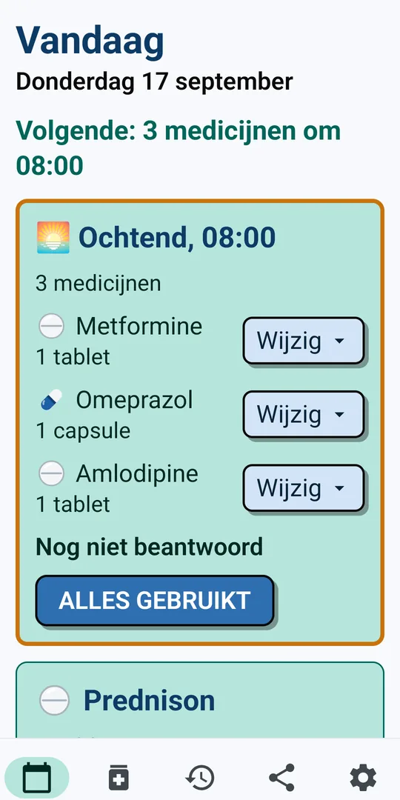
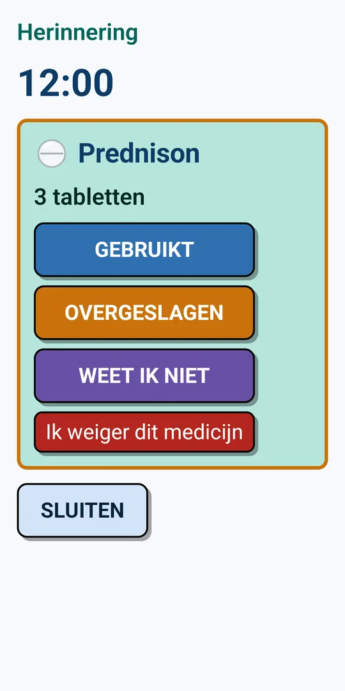
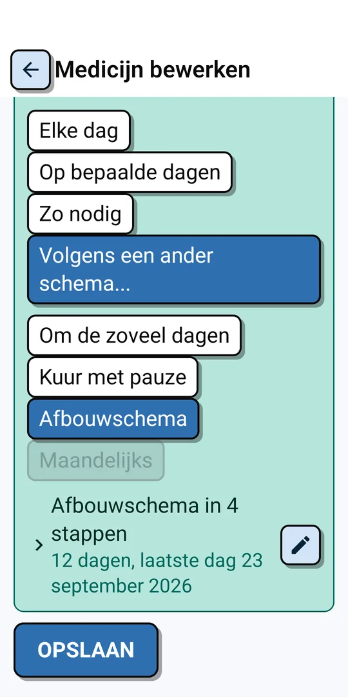

MediRustDuidelijke medicijnherinneringen voor ouderen en mantelzorgers. De app herinnert u op het juiste moment, u vinkt met één tik af wat u gebruikt heeft, en u ziet meteen hoe het gaat.



| Stap | Per keer | Hoe lang |
|---|---|---|
| 1 | 4 tabletten | 3 dagen |
| 2 | 3 tabletten | 3 dagen |
| 3 | 2 tabletten | 3 dagen |
| 4 | 1 tablet | 3 dagen |
MediRust herinnert u elke dag aan de juiste hoeveelheid.
MediRust verzamelt, verzendt of deelt geen enkel gegeven. Alles wat u invoert blijft op uw eigen telefoon. U heeft geen account en geen internetverbinding nodig, en er zijn geen advertenties of trackers. Lees ook het privacybeleid.
U probeert MediRust een maand lang gratis uit, zonder beperkingen. Deze proefmaand start zodra u uw eerste medicijn instelt, of uiterlijk drie dagen na installatie. Daarna koopt u MediRust Premium met een eenmalige aankoop: geen abonnement, en voor altijd. Koopt u niet, dan blijven de herinneringen afgaan op de ingestelde tijden, maar zonder medicijnnamen en zonder afvinken. Uw gegevens blijven altijd bewaard.
MediRust is een hulpmiddel om u te herinneren aan uw medicijnen. MediRust is geen medisch hulpmiddel en stelt geen diagnose, en behandelt, geneest of voorkomt geen enkele aandoening. Raadpleeg voor medisch advies altijd uw arts of apotheker.